cuGMEC：把回旋动理学–MHD 混合模型
落实到 GPU 的物理与数值选择
从离子 FLR、电子流体闭合到内存访问重排：哪些结果已经验证，哪些仍是后续目标？
S. Y. Liu · P. Y. Jiang · G. Y. Fu
Computer Physics Communications 327 (2026), 110249
1. 结论先行：这篇文章贡献在哪里？
cuGMEC 不是把既有 CPU 程序逐行搬到 GPU。作者重新组织了 CUDA C++ 实现，同时在此前 GMEC 的基础上扩展热离子有限拉莫尔半径（FLR）、平行电场、电子连续性与等温闭合、热离子和快离子回旋动理学及非线性项。论文的主线是：在保留 Alfvén 模相关关键动力学的混合模型中，用坐标结构与数据布局降低大规模初值计算成本。
- 物理结果：撕裂模电阻率标度、TAE 与 RSAE 跨代码比较、FLR 辐射阻尼、非线性谐波耦合及 ITG/KBM 扫描，构成互补验证链。
- 算法结果：shifted metric 与沿场交错网格解决坐标/奇偶解耦问题；系数压缩、warp shuffle、场数据重排和粒子排序分别削减不必要的访存。
- 阅读边界：电子不是全动力学电子，TEM 不在已覆盖范围；本文所有物理验证均是 tokamak；未建立普适长时守恒误差或完整多尺度湍流输运验证。
原文 §1、§4–6，PDF 第 2、8–15 页。
2. 物理模型：从“快离子修正MHD”走向双离子动理学耦合
证据范围：以下“论文结果”均来自所提供的16页正式论文，页码为PDF正文页码；“解读”“建议”是阅读分析，不代表作者已经完成的研究。本文的GPU版不仅改写执行平台，还扩展了CPU版GMEC的物理闭合：热离子与高能粒子均用回旋动理学PIC描述，电子用流体方程描述，场通过回旋动理学涡量方程和广义欧姆定律推进（第2–3页，§2.1–2.2）。
论文所说“实现全部非线性项”，指所列降阶gyrokinetic–MHD模型中的非线性项，不等于完整Vlasov–Maxwell系统，也不等于包含所有电子动理学、碰撞或燃烧等离子体物理。它保留了研究低频Alfvén波与离子共振相互作用的重点，同时对电子响应及场的自由度作了约化。
| 组成 | 推进或约束关系 | 承担的物理 |
|---|---|---|
| 场与电流 | δφ、δA∥、δJ∥；式(1)、(2)、(5)、(8) | 离子极化、剪切Alfvén响应、曲率压力耦合、平行电场及电阻 |
| 电子流体 | δnₑ、δTₑ；式(3)、(4) | 电子连续性与作者称为“等温条件”的温度闭合 |
| 热离子与高能离子 | 各自的回旋中心轨道和δf权重；式(9)–(14) | 离子共振、轨道效应、回旋平均，以及反馈到场上的压强扰动 |
| 平衡输入 | DESC → MATLAB预处理 → cuGMEC | 以平衡几何、磁场和剖面定义初值问题；本文验证均为托卡马克 |
1. 涡量方程把粒子压力反馈给Alfvén波
原文式(1)，第2页。角括号表示回旋平均，κ₀=b₀·∇b₀，h表示高能离子。
原文式(6)及其下方定义，第3页。
解读：第一项是带热离子FLR修正的极化响应；两项电流梯度表达沿总磁场与扰动磁场的平行电流作用；最后一项让电子、热离子及高能离子的压力通过磁曲率驱动或反馈到波。E×B对流、扰动磁场与扰动量的乘积，以及由轨道推进产生的粒子非线性，构成多模耦合的不同通道。
这里的δPₛ=(δP∥ₛ+δP⊥ₛ)/2是作者用于曲率项的压力组合，不能顺手改写成常见的各向异性压力标量平均(δP∥+2δP⊥)/3。式(14)给出δP∥=∫m v∥²δf d³v和δP⊥=∫μBδf d³v。
2. 平行电场与电子流体闭合
原文式(2)，第2页。
平行Ampère约束，原文式(5)，第3页。
解读：相较于直接施加理想MHD的E∥=0，广义欧姆定律允许电子密度梯度与电阻影响平行电场。这是理解KAW、ITG与KBM验证的关键。但有限E∥并不自动补上电子Landau共振、俘获电子动力学等效应。
电子连续性，原文式(3)，跨第2–3页。
原文式(4)，第3页；作者称之为isothermal condition。
阅读时的细节：式(4)仍推进δTₑ，并允许平衡温度梯度经对流产生温度扰动，因此不宜把本文电子模型一概写成“δTₑ恒为0”。总电子压力扰动为δPₑ=nₑ₀δTₑ+Tₑ₀δnₑ+δnₑδTₑ，最后一项也属于模型保留的非线性。
3. FLR在两个位置进入，Poisson括号不能抄错
原文式(7)使用Padé近似；这里用“≈”明确它不是对所有b成立的恒等式。
原文式(8)，第3页，已对照PDF像素。
论文先推进涡量δω，再由式(8)求δφ。括号中的ρᵢ²vA²δω位于∇⊥内部；它不是加在Poisson算子外的零阶质量项。在空间系数变化的几何中，错误地移出微分算子会改变模型。
两条FLR路径应分开记：一条是场方程中热离子极化的Padé修正；另一条是PIC轨道和压力反馈中的多点回旋平均，作用于被动力学描述的离子。作者按式(15)–(17)在Boozer坐标中构造N个回旋平均点，常用验证配置为16点。开启“FLR”不能简单等同于增加一个耗散系数；辐射阻尼案例的物理解释是TAE向KAW耦合，而非FLR项本身就是欧姆耗散。
4. 回旋中心轨道与δf耦合
原文式(9)，第3页；这里把粒子电荷记为qₛ，以免与安全因子q混淆。
原文式(10)、(12)。磁矩μ在所列无碰撞轨道模型中作为回旋中心变量；δE=−∇δφ−∂ₜδA∥，δB=∇×δA∥，见式(11)。
原文式(13)，g为标记粒子分布。
原文式(14)。
闭环关系是“场 → 粒子轨道与权重 → 离子扰动压力 → 涡量 → 场”。δf方法通过不再对整个平衡分布反复做噪声统计来降低初始噪声，并不消除全部有限标记数噪声。非线性案例把每格粒子数从64提高到512，正说明长期多模演化仍需主动控制统计噪声。
3. DESC、场对齐和shifted metric各做什么
DESC提供平衡，其原始径向标签ρ=√ψₜ（ψₜ为归一化环向磁通）；cuGMEC再使用Boozer、场对齐和shifted-metric三套非正交曲线坐标（第3–4页，§2.3）。DESC参与输入生成，不意味着时间推进器继承了DESC的自动微分，也不意味着当前实现已经完成三维仿星器验证。
原文式(20)及其边界条件，第4页。ψₚ为极向磁通标签，注意与ρ、ψₜ区分。
原文式(21)：每个极向网格位置有自己的局部场对齐坐标。
论文利用k∥≪k⊥的各向异性，减少沿磁场方向所需网格，并将Poisson求解安排在二维(x,z)平面。shifted metric缓解磁剪切导致的网格基矢不连续：MHD场在shifted metric网格推进，粒子在场对齐坐标推进，两者需要插值。数值上，场采用五点差分和RK4，粒子—网格交换采用三线性插值；仅y方向对δA∥、δJ∥作交错配置，以抑制Fig.1展示的奇偶点解耦（第4页，§2.4）。不能据此声称整个PIC耦合算法在空间上具有统一四阶精度。
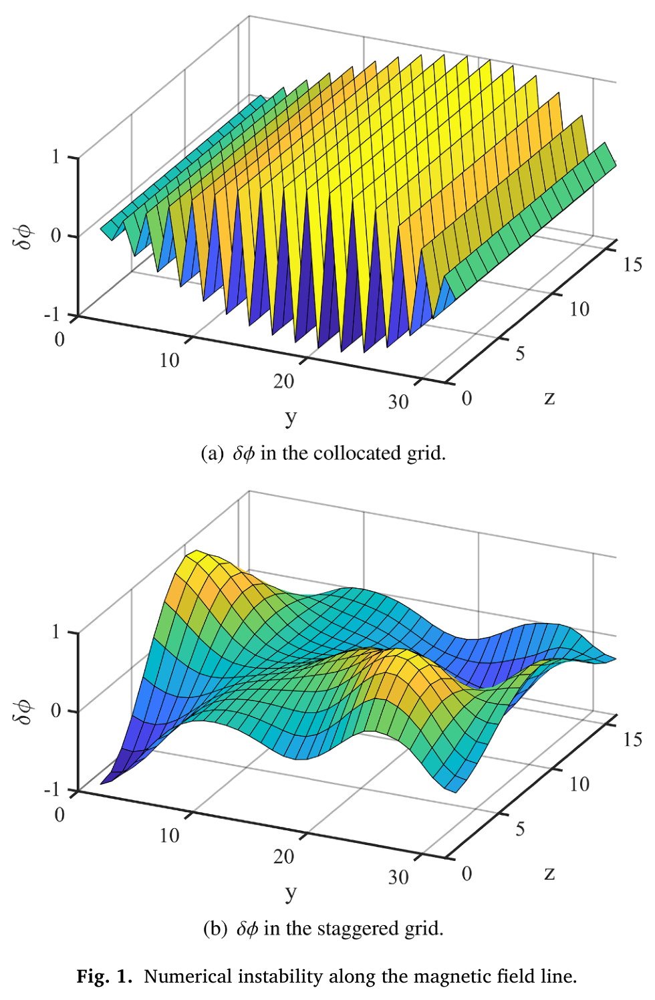
hybrid到底怎样耦合：交换的是哪些量？
这里的hybrid不是两套独立程序各算各的。场方程承担低频电磁响应和电子闭合，热离子与高能离子以标记粒子的相空间演化提供动理学压力；双方在每次时间推进中反复交换信息。原文§2、§3.5和Fig.5可以明确支持下面的宏观闭环。
| 环节 | 输入 → 输出 | 耦合含义与需要检查的细节 |
|---|---|---|
| ① 推进场未知量 | δω、δA∥、δnₑ、δTₑ → 下一阶段场状态 | 涡量曲率项读取热离子与EP压力矩；Ohm定律提供电子平行响应 |
| ② 约束求解 | δA∥ → δJ∥；δω → δφ | 分别由式(5)Ampère关系和式(8)FLR-Poisson方程完成 |
| ③ gather到回旋中心 | 网格场及导数 → 各回旋平均点的δE、δB | 三线性插值、多点gyroaverage与坐标转换；全局场在各GPU收集 |
| ④ 推进离子δf | 场 → X、v∥、w | 热离子和EP分别按式(9)–(13)推进；f₀、μ及物种参数定义响应 |
| ⑤ scatter压力矩 | 离子权重与速度 → δP∥、δP⊥ | 按式(14)累积网格压力，跨GPU AllReduce；形成曲率压力组合与回旋平均反馈（概念流程；下文核查的当前源码直接沉积组合量） |
| ⑥ 回到场 | ⟨δPᵢ+δPₕ⟩ → 涡量曲率项 | 热离子、EP和电子压力共同决定波的驱动、阻尼与结构 |
注意，表中“阶段”仅指逻辑环节，不声称原文已清楚给出每个Runge–Kutta stage的实际调度。Fig.5是宏观流程图。
压力耦合，不是独立粒子电流沉积驱动Ampère
从公开列出的式(1)–(14)看，离子动力学反馈明确进入的是δP∥、δP⊥及其组合；δJ∥由δA∥的Ampère约束求得，再进入涡量方程、欧姆定律及电子连续性。论文没有展示一个“对离子标记沉积Jᵢ，然后把Jᵢ作为独立源加进Ampère方程”的耦合步骤。因此称它为压力矩耦合的gyrokinetic–MHD约化系统较准确，不宜未经推导就套用所有经典current-coupling或pressure-coupling方案的能量定理。
“不是独立电流沉积”也不意味着离子对电流和磁扰动没有影响：它们先通过压力改变涡量和电势，再由耦合场方程改变δA∥与δJ∥。电子平行电场则由式(2)中电子密度梯度、电阻以及电磁项闭合；这条流体闭合链不能提供缺失的俘获电子相空间响应。
是否double counting：能说明什么，不能证明什么
不能仅因“热离子既在Poisson的FLR项又在PIC里”便判定重复计算：前者是极化/惯性响应，后者提供动理学压力曲率矩，物理角色不同。δf=f−f₀还把平衡分布和扰动分开；TAE不计EP平衡压力、RSAE计入EP平衡压力，也是两种明确的平衡设定，而不是把同一份扰动压力重复相加。
但这还不构成严格的“无double counting证明”。要确认热离子极化、绝热/非绝热响应及动理学压力在指定阶次下没有重叠或遗漏，需核对模型推导、变量定义和离散能量预算。特别要检查：式(1)离子压力外的gyroaverage，与gather和pressure scatter采用的回旋平均是否按推导相互一致；相同的三线性形函数并不能单独保证曲线坐标、Jacobian权重、坐标转换及时间推进组合后的离散能量守恒。论文没有给出完整的这类证明，阅读报告应把它作为可验证的问题而不是结论。
RK4、场粒子同步与subcycling：原文没有交代到哪一步？
§2.4说MHD与PIC都使用四阶Runge–Kutta；§3.5的顺序示意是先推进MHD、收集场，再推进粒子、归并压力。正文没有清楚说明场和粒子是否在每个RK子阶段同步更新、阶段压力何时沉积、场是否冻结或外推，以及是否存在粒子或场的subcycling。不能仅凭两端分别采用RK4就宣称耦合整体四阶，也不能仅凭流程图就断言它使用一阶算子分裂。
最直接的源码审查与测试是跟踪一个时间步内的阶段变量和通信位置，再做Δt、Δt/2、Δt/4的固定终时收敛：同时比较ω、γ、场—粒子交换相位和总能量残差。若尝试subcycling，应把场插值及压力回馈时刻作为方案的一部分，验证收益来自缩减不必要更新，而不是允许新的相位滞后。
当前源码补充：两个RK4不是一个同步RK4
以下为2026-10-19对当前固定提交的静态核查，不是对论文发布快照的追认。从main.cu 主循环可读出：
- 先运行
MHDLoopMax=ratioDt个MHD步；每步有4个场RK stage与场重建、可选滤波/耗散。MHD stages接收同一组离子压力数组dPi_midl/dPa_midl/dPb_midl。 - 随后
mhdToPIC计算∂ₜA∥、转换shifted→field-aligned并AllGather；MHD2PIC组织取场数据。见L847–900。 - 各离子物种进行一次PIC RK4，步长是
ratioDt×dt。其4个stage会按stage粒子位置重新插值，但所读pic3d场快照不在stage之间由MHD更新。 - 完成粒子步后沉积压力、合并缓冲、AllReduce、更新ghost、转回shifted坐标，供后续MHD使用。源码默认ratioDt=1；setup.h明确MHDLoopMax=ratioDt且两种基础dt相同。
压力回传也有直接源码证据：GyroAlignedRK4沉积按归一化组合 (m v∥²+μB) w/(2 J Ngyro) 乘物种常数，使用三线性八角点权重与atomicAdd；不是先输出两个独立压力场再由CPU相加。其矩意义对应原文(δP∥+δP⊥)/2。当前代码还存在可选准中性密度沉积开关，默认关闭；这不应被混作论文主文电子连续性模型的既定设置。
优先研究：耦合精度–成本，随后才做学习闭合
第一优先级是可归因的小研究：固定TAE平衡、物种分布与随机种子，对当前顺序耦合做dt、ratioDt联合细化，并与逐级同步或预测–校正耦合比较。既画固定误差下的墙钟成本，也画固定预算下的ω、γ、相位、饱和幅值和物种交换功率误差；参考解必须同时细化场、粒子、回旋积分及标记数，不能只把一个模块dt调小。若仅减少粒子数已经达到同样收益，就不应把新耦合方法称为必要。
这条路线的贡献应是“在哪个波粒耦合强度/时间尺度比下，低频压力更新仍准确，以及怎样降低失效”，而不是宣称首次多速率或首次RK耦合。守恒量诊断需先从所选连续模型推导，显式数值耗散、边界通量、源汇必须单列。
第二优先级：保持EP PIC和场方程，只学习热离子扰动压力响应，给模型历史窗口或潜在状态，因为共振响应一般不能用当前场值的瞬时代数函数替代。可从规定外场下的热离子子系统数据训练，再用未参与训练的自洽TAE/RSAE检验闭环泛化。必须比较线性/gyrofluid闭合、较少粒子的PIC和无记忆网络；指标包括波粒功率相位、驱动/阻尼符号与净端到端加速，不能只报压力MSE。
神经流体闭合与记忆闭合已有相关工作：PNAS 2025，FNO热流闭合及2026年的历史/在线闭环研究。这里仅作邻近研究定位，未在本报告重新全文评审。因此创新应落在回旋动理学压力、FLR、能量交换结构与跨参数验证，不宣称“首次NN闭合”。
暂不作为最小课题：一步完成3D PO–pwO平衡上的非线性快离子输运或端到端可微优化。它同时引入坐标、模族、分布、边界和守恒验证，难以归因，也超出本论文已建立的验证范围。
我们能做什么：先做低成本、可归因的耦合实验
建议先固定第4.2节n=6、Tf=400 keV的线性TAE，建立可复现基线。与直接开展昂贵仿星器多模非线性或训练代理模型相比，受控开关能更快回答“哪个闭合和哪条交换链改变了结果”。以下是研究建议，论文并未报告这些新实验。
| 优先实验 | 保持不变的内容 | 要回答的问题与观察量 |
|---|---|---|
| A. 审查并复现基线 | 平衡、分布、归一化、域、边界、种子与全部数值参数 | 先复现ω、γ、m=10/11结构；确认各RK stage、gather/scatter和压力求和顺序 |
| B. 区分两条FLR路径 | 热/快离子温度与密度不变；分别控制Poisson热FLR和PIC回旋平均 | 先做2×2受控开关，区分场极化和轨道平均对净增长、短波结构的贡献；进一步分开热离子与EP回旋平均 |
| C. 热离子反馈定位 | 仍推进热离子，仅临时屏蔽其压力反馈，保留EP反馈 | 量化这一反馈通道对ω、γ及功率平衡的作用；这是数值消融，不自动是自洽新物理模型 |
| D. 电子平行闭合定位 | 固定几何和离子分布，先明确要比较的完整闭合方程 | 比较有限E∥与适当的理想闭合极限；避免只删一个项便宣称两种完整物理模型 |
| E. 非线性通道对照 | 沿用Fig.10的粒子非线性开/全场非线性开对照 | 先重复谐波增长比，再看主模和n=0的变化；不要只用单点幅值推断输运 |
| F. 时间耦合审计 | 固定空间分辨率、粒子噪声水平和物理开关 | 测试Δt收敛；若实现多步率，测场—粒子相位滞后及与模型一致的能量交换残差 |
为了让开关差异可解释，优先使用相同标记初始化与随机种子，先做短线性窗口；对有意义的差异再增加标记数、缩小时间步并重复少量种子，以区分真实效应、PIC噪声与离散误差。净增长率γ是驱动和阻尼相减的结果，仅看γ变化不足以断言某个独立阻尼通道；应尽量记录与该约化模型能量定义一致的分物种交换功率和数值耗散。
这些消融会主动改变模型，尤其屏蔽某物种压力或单独切换FLR通道时可能破坏原有能量关系。因此第一用途是定位机制和数值接口；若要把某个组合当成可发表的新闭合，仍需补上阶次、一致性与守恒论证。首轮目标是建立可信基线并识别最敏感的耦合，而不是把机器学习替代方程作为默认下一步。
4. CUDA 实现：算得少与搬得少同时重要
4.1 并行布局与通信的真实代价
MHD 网格按极向 y 分给多张 GPU，x、z 暂不分解；z 为内存最连续方向，有利于 shifted metric 中频繁的 z 插值。每张 GPU 的粒子数保持相同，粒子不按当前空间位置迁移：场扰动及其导数先全局汇集，每张卡的粒子可在全局域推进，沉积压力再作全局求和。MHD 边界使用 ghost grids，节点内通信采用 NCCL、跨节点采用 MPI，Poisson 方程使用 cuDSS 稀疏直接求解。
评述：这避免了粒子迁移负载不均，但场量复制与压力 all-reduce 带来通信/内存成本。它是有明确取舍的分解方案，不能由“每卡相同粒子数”推断所有通信阶段均无瓶颈。按 y 分解也限制可用并行度；进一步分割 (x,z) 平面属于文中未来工作。
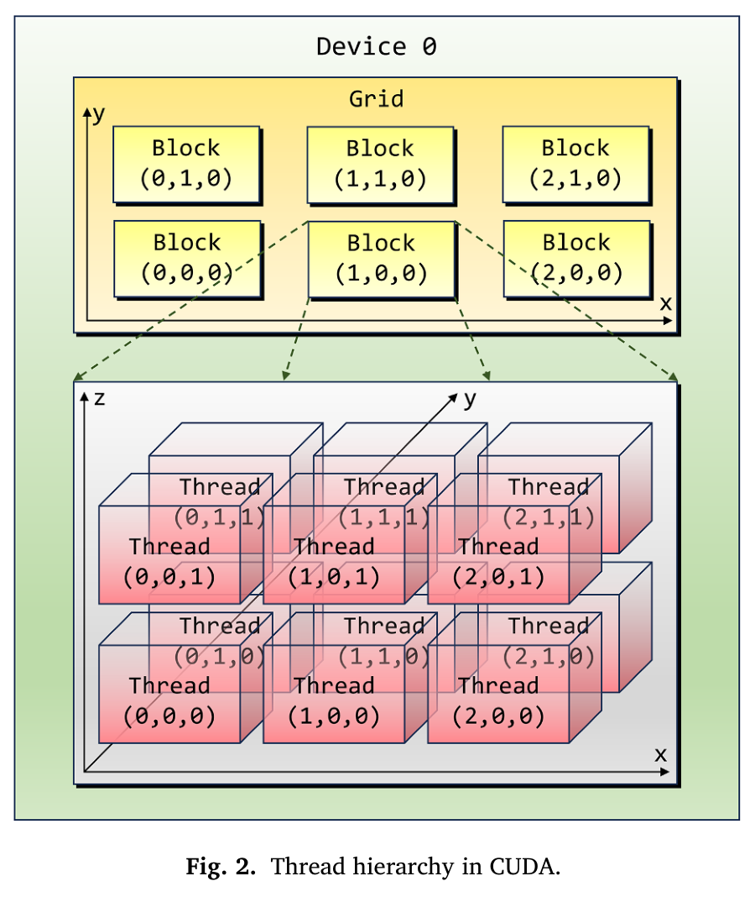
4.2 系数压缩：预计算几何，而非每次重复展开
曲线坐标下，度规与其导数使算子展开很长。CPU 版本采用编译时符号求解器 CSS；GPU 版本借助 Mathematica 展开矢量表达式、合并同类项、压缩系数，并保留导数算子结构。以平行电流为例，原式 (23) 的第二种表达可概括为：
几何组合进入六个位置相关系数，时间推进时主要读取系数和场值。论文报告通常约 1.5–2 倍收益；RTX 4090/L40 单精度测试下最高约 10 倍，是该特定 kernel 的访存瓶颈被放大后的结果，不能外推为整个求解器加速。
4.3 warp shuffle：利用单 n 扇区的特殊结构
单一环向模数 n 的模拟只取 1/n 环向域，z 点数可取 16 或 32，与半 warp 或整 warp 对齐。重复沿 z 插值时，线程直接读取同 warp 寄存器，减少高延迟内存访问。原文给出在系数压缩基础上再增加约 1.5–2 倍的局部收益。这依赖网格、模态域和线程映射，不能把单 n 的高效布局自动当作任意多 n、任意3D几何的同等收益。
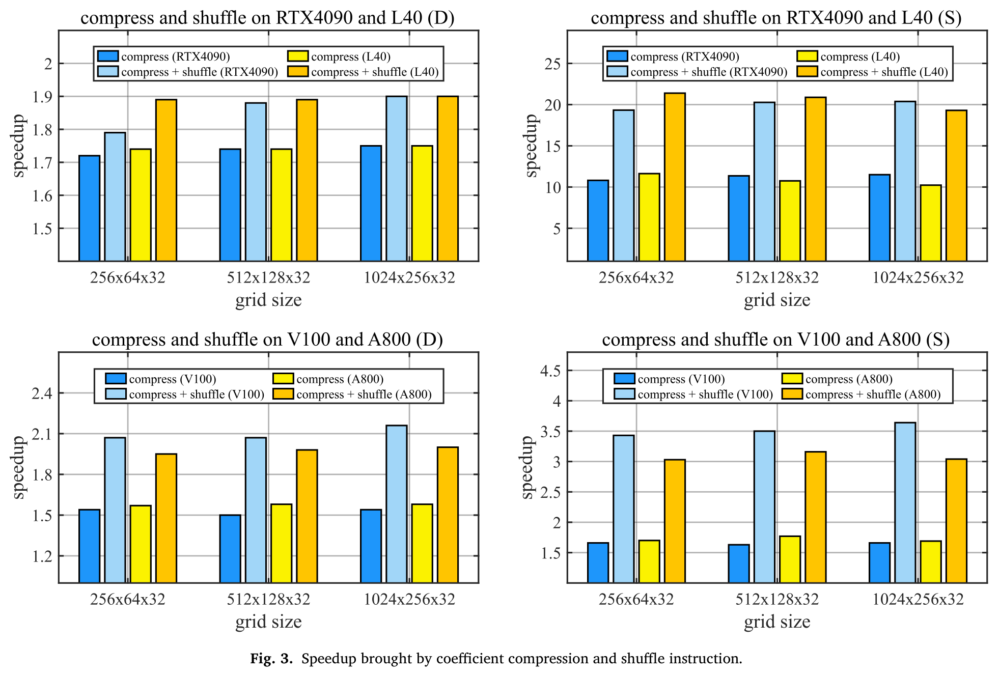
4.4 PIC 数据布局与粒子排序
三线性插值要读取每个网格单元的八个角点，粒子无序时相邻线程常访问无关位置，缓存行中真正用到的字节比例很低。作者按局部插值需求重排场值；再用 CUB Radix sort 按网格单元整数索引排序，使邻近线程更可能共享场数据。粒子采用 SoA 类布局，并为排序前后数据分配双缓冲，通常每 20 步排序一次。
- 场数据重排：A800 约 3.0–4.25 倍，RTX 4090 约 2.0–3.5 倍。
- 在重排基础上排序：A800 约 2.0–3.0 倍，RTX 4090 约 5.0–8.0 倍。
- 两者组合对 PIC 部分约 10–25 倍；分母为优化前实现，并非 CPU 版本。
增加 gyro-average 点数，一方面会让单次 gather 更昂贵并提高重排价值，另一方面会破坏排序带来的局部性，所以“排序收益”可能减小。这两个趋势并不矛盾。双精度与单精度的相对收益也不能作为无条件降精度建议；本文未给出完整单/双精度长期物理误差对照。
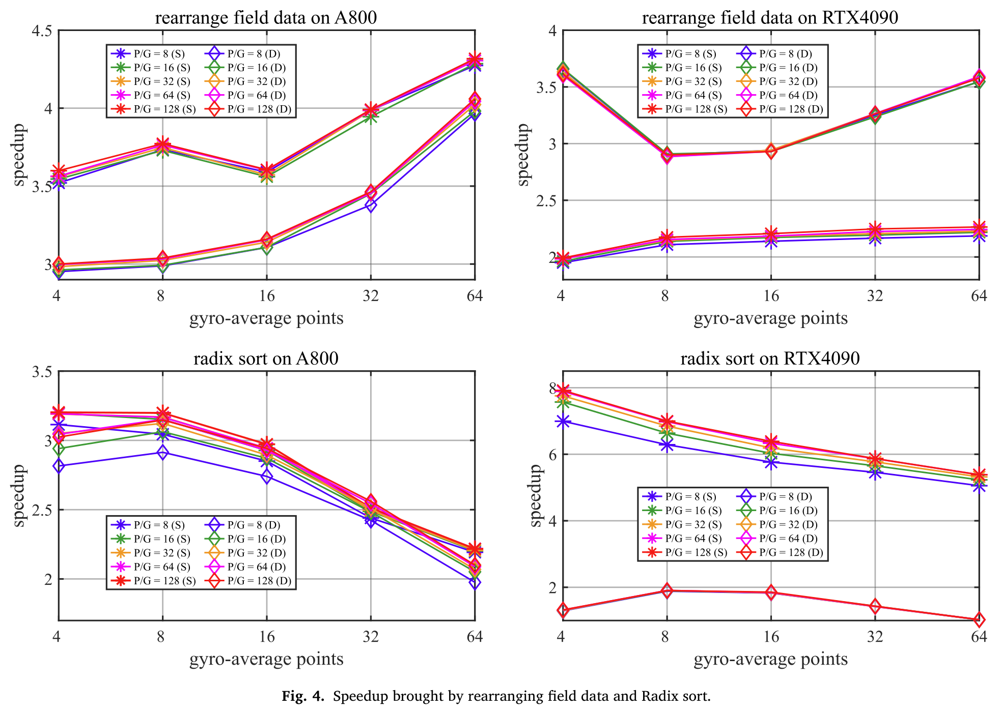
4.5 主循环应怎样理解？
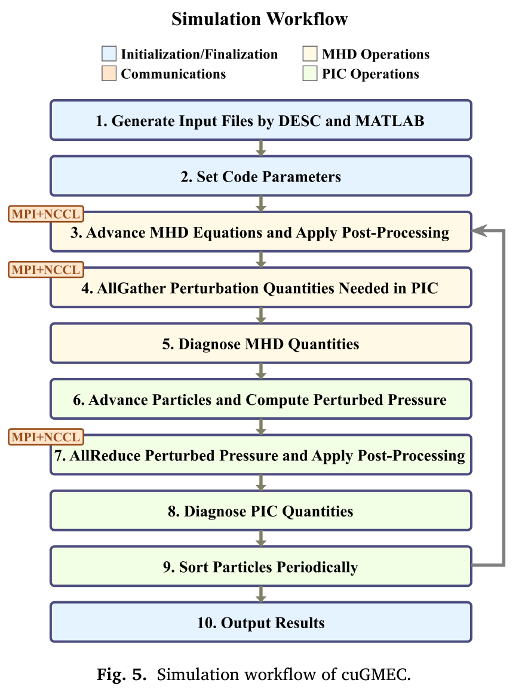
DESC 生成平衡 → MATLAB 坐标/度规转换与输入生成
初始化：网格、粒子、场扰动、边界、预计算系数
重复时间推进：
推进 MHD 场方程；更新 ghost grids
求解 gyrokinetic Poisson 方程并更新所需场/导数
进行可选滤波、耗散及 MHD 诊断
在 GPU 间汇集 PIC 所需场数据
回旋平均 + 插值取场 → 推进粒子轨道与 δf 权重
沉积压力 → 跨 GPU 求和 → 反馈下一次场推进
进行粒子诊断；按给定频率排序
输出 → 频率、增长率、模结构、相空间后处理这是原文 Fig.5 / §3.5 的阅读级流程概括，不替代 RK4 各 stage 的具体耦合实现。本文未编译或运行 cuGMEC；不据此宣称时间耦合阶数已独立验证。
5. 验证链：每个算例到底检验了什么
本文不是只给出一张TAE曲线。它按电阻MHD、线性高能离子驱动、热离子FLR辐射阻尼、非线性多模耦合、现实平衡RSAE以及ITG/KBM建立了分层验证链。不过，代码间一致性、解析标度一致性、实验频率比较和长期输运预测是不同强度的证据，应分别评价。
| 案例 | 主要证据 | 不能由此直接推出 |
|---|---|---|
| m/n=2/1撕裂模 | γ∝η³⁄⁵；模位于有理面 | 一般磁重联、岛宽饱和和输运均已验证 |
| n=6 TAE | 快离子温度扫描及跨代码增长率、结构比较 | 所有EP分布、所有阻尼通道均准确 |
| FLR辐射阻尼 | 短波结构；lnγrad对1/ρᵢ的拟合 | 所有点的阻尼率误差仅为4.8%或8.5% |
| 多n非线性TAE | n=0、12、18的增长率比例约为2、2、3 | 高n模线性不稳定；饱和输运已定量验证 |
| DIII-D RSAE | 多代码频率及增长率；qmin附近结构 | 与实验所有诊断或同一时刻完全匹配 |
| CBC ITG/KBM | βₑ扫描与模结构 | 已经模拟TEM或完成AE–微湍流耦合研究 |
案例一：撕裂模检验电阻MHD底座
论文结果（第8–9页，§4.1，Fig.6）：m/n=2/1；R₀=10 m，a=1 m，轴上B₀=1 T；氢背景nᵢ=10¹⁹ m⁻³。安全因子q=1.75√(1+49ψₚ²/51)，ψₚ为归一化极向磁通。此例关闭电子密度、电子温度及热离子压力扰动，用来隔离电阻MHD部分。
计算域0.001<ψₚ<0.95，网格256×64×16，Δt=0.05tA（tA=R₀/vA），不加数值耗散，电阻率扫描3×10⁻⁸–10⁻⁵ Ω·m。Fig.6显示δφ在q=2有理面附近形成尖窄径向结构，增长率随η变化符合γ∝η³⁄⁵。
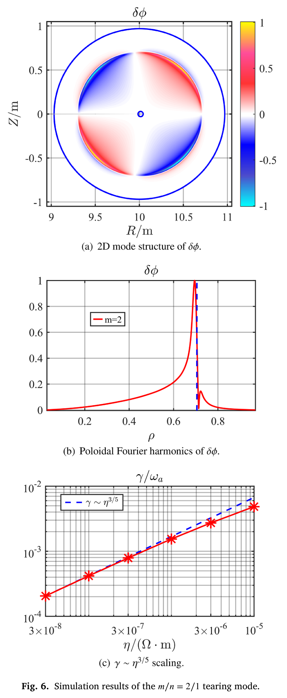
解读：这是对电流—磁场耦合和电阻层解析标度的针对性检验，而不是对重联后饱和态的全面验证。Fig.6径向横轴使用ρ，输入q剖面的变量是ψₚ，不宜把两个磁通坐标混为一谈。
案例二：n=6 TAE对标与FLR抑制
论文结果（第9–10页，§4.2，Figs.7–8）：采用标准大纵横比TAE基准，q=1.71+0.16(r/a)²，R₀=10 m，a=1 m，B₀=3 T。热背景是氢，电子与离子均为n=2×10¹⁹ m⁻³、T=1 keV的均匀剖面。高能离子是Maxwellian氘，其压力不计入本例平衡。
原文式(24)；n₀=1.44131×10¹⁷ m⁻³，c₀=0.49123、c₁=0.298228、c₂=0.198739、c₃=0.521298。
计算域0.001<ψₚ<0.95，网格256×64×16，Δt=0.025tA，仅模拟1/6环向区域；热离子和高能离子都用PIC，文中给出的平均标记数为每格64、回旋平均16点，不加数值耗散。作者扫描快离子温度Tf=100–800 keV，并分别展示有、无FLR的增长率。
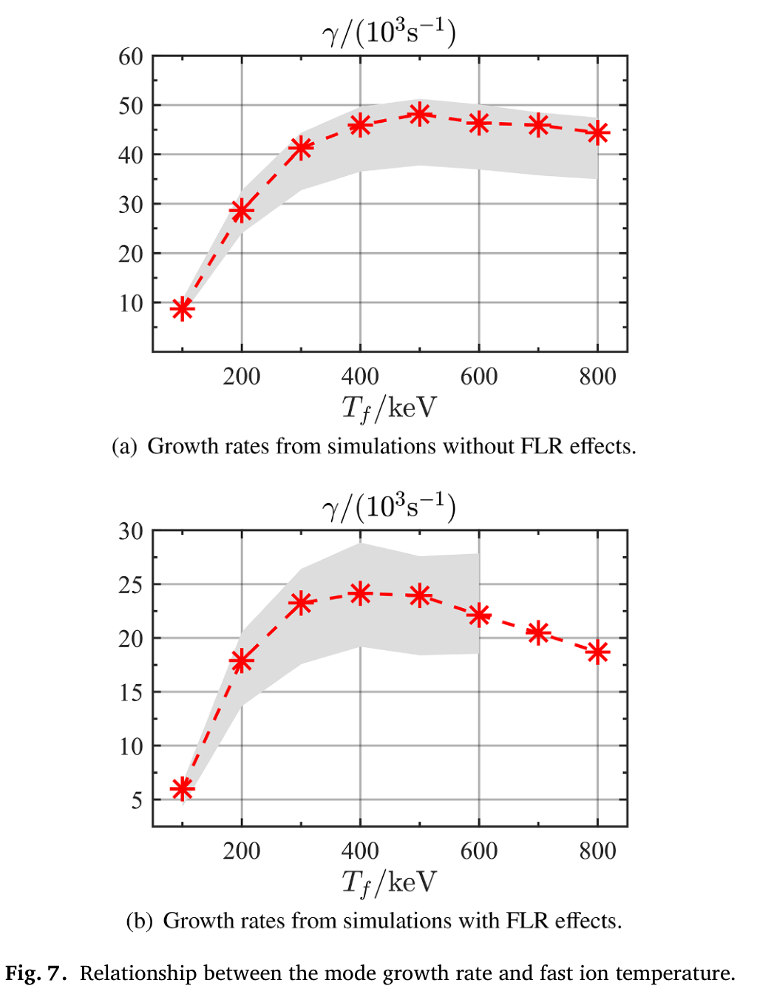
定量读取：在Tf≈400 keV，Fig.7中无FLR的γ约为4.6×10⁴ s⁻¹，有FLR约为2.4×10⁴ s⁻¹。两值来自图读数而非数据表，只宜用来说明此基准下FLR使驱动净增长率显著下降。峰值位置也改变：无FLR曲线约在500 keV附近达到最大，有FLR约在400–500 keV附近；升高快离子温度并不产生单调增强的净增长。
特别注意：Fig.7灰带是其他代码增长率均值的±15%（无FLR）或±20%（有FLR），不是cuGMEC的统计置信区间，也不是作者证明的统一误差界。
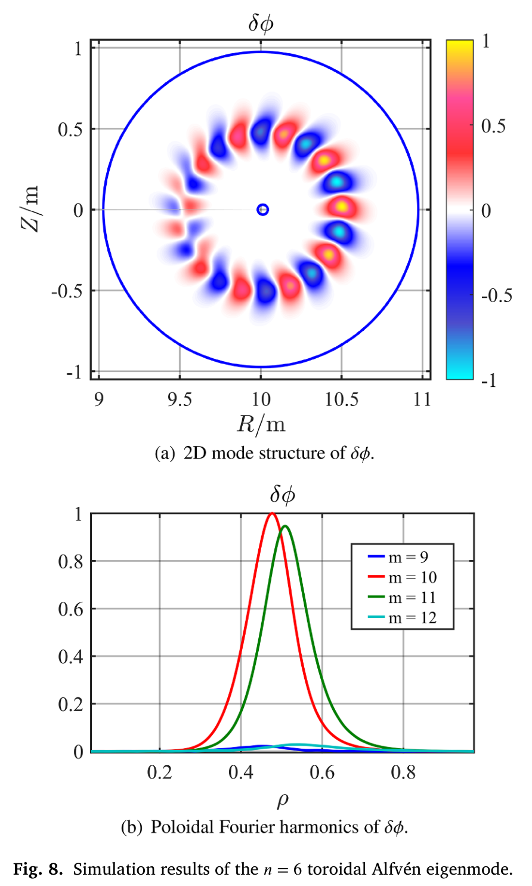
Fig.8采用Tf=400 keV且无FLR的情况：m=10与m=11是主要相邻极向谐波，峰位在ρ≈0.5附近，符合TAE由相邻极向谐波耦合形成的结构。与基准文献[44]的增长率及结构吻合，验证的是这组分布、几何和开关配置下的线性响应。
案例三：热离子FLR带来的短波结构与辐射阻尼
论文结果（第10–11页，Fig.9）：保持同一n=6 TAE平衡，在Tf=400 keV把快离子密度降到βf=0.0004，使辐射阻尼与驱动增长处于可比较量级。作者在回旋动理学Poisson方程的FLR项前引入乘法系数，扫描有效热离子回旋半径，并与理论[46–48]比较。
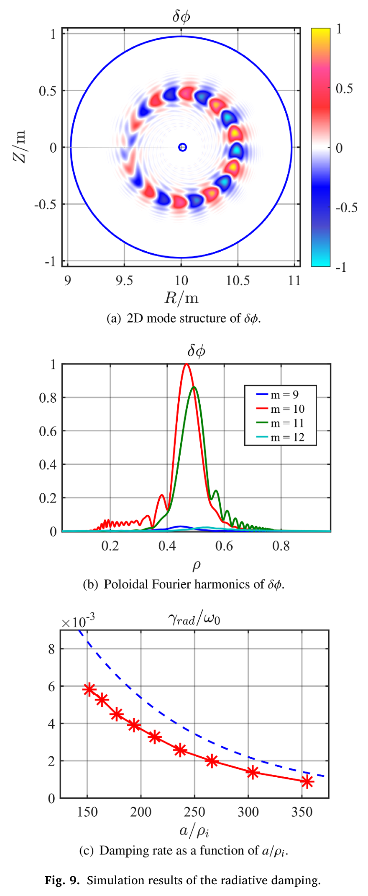
在a/ρᵢ≈177时，二维结构及极向谐波上出现明显短径向波长振荡。作者报告lnγrad随1/ρᵢ近似线性，拟合斜率和截距相对理论分别相差4.8%与8.5%。Fig.9c展示的是γrad/ω₀对a/ρᵢ的曲线。
解读：结构中的短波尾与阻尼的尺度依赖共同支持TAE向KAW转换的解释。这里4.8%和8.5%属于对数拟合参数，不能写成“辐射阻尼率与理论的误差小于8.5%”；图中的理论和模拟绝对幅值仍可见系统差异。另一个复现要点是：这是对Poisson项系数的受控扫描，不应自动当成同时自洽改变所有温度、轨道和回旋平均参数的物理温度扫描。
建议：若把此方法用于具体装置，需要明确净增长率中怎样分离γrad，检查边界处理、径向分辨率、其他阻尼项和拟合区间。论文给出的拟合信息本身不足以把任意装置的全部阻尼预算归结到FLR。
案例四：全场非线性改变受迫谐波，而非让高n线性失稳
论文结果（第10–11页，Figs.10–11）：Tf=400 keV，保留n=0、6、12、18、24；网格改为256×64×64，每格粒子数提高到512，并在涡量方程加入D∇⊥²δω、D=10⁻⁷以改善稳定性。D是文中给出的代码参数，不能不查归一化就替它补上SI单位。
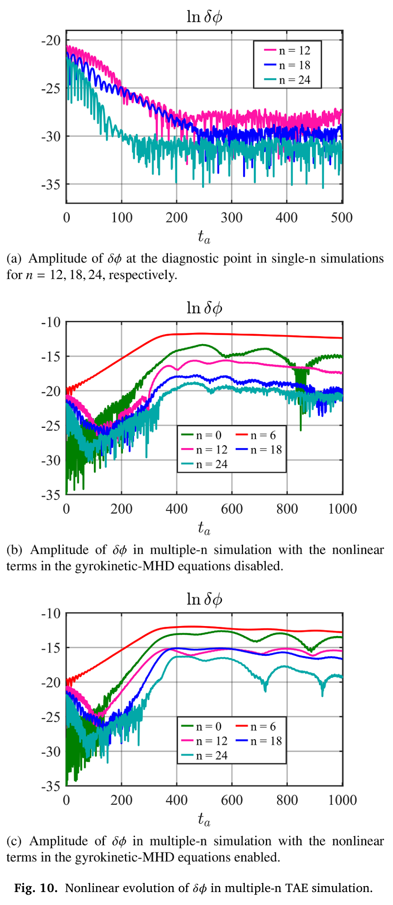
Fig.10a的单n结果先确认n=12、18、24线性稳定。Fig.10b关闭gyrokinetic–MHD场方程的非线性项，仅保留粒子非线性；Fig.10c打开场方程非线性。n=6与自身及其复共轭耦合生成n=12和n=0，后续耦合产生更高谐波。
| 比较量 | 论文数值 | 应如何解释 |
|---|---|---|
| γ₀/γ₆、γ₁₂/γ₆、γ₁₈/γ₆ | 1.95、1.93、2.98 | 与二次、二次、三次受迫谐波的早期增长标度相符 |
| 开启全部场非线性后的幅值比：n=0、6、12、18、24 | 5.7、0.66、6.4、29、4.4 | 作者比较Fig.10c与10b的诊断点δφ幅值；不是能量比或普适饱和值 |
| n=24的四倍增长率检验 | 未给出可靠比值；作者说明幅值较小 | 不要补写成“所有谐波精确满足整数倍” |
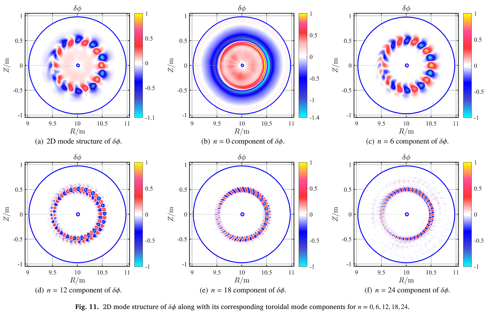
解读：若A₆∝exp(γ₆t)，二次驱动项A₆²便按exp(2γ₆t)增长，后续A₆A₁₂按exp(3γ₆t)增长。这是非线性耦合实现的有力一致性检查。n=0分量可改变背景流动或径向场结构，但仅凭n=0标签不能一概认定已获得纯m=0带状流，更不能把这些曲线直接转译成EP损失率或热输运增强倍数。
这组结果的价值在于说明仅保留粒子非线性会改变模式间相对幅值，主模n=6在本例反而下降。论文未给出跨代码的非线性饱和值、守恒预算或实测EP输运对标，因此“非线性耦合已得到合理验证”比“长期非线性输运已被验证”更准确。
案例五：现实DIII-D平衡中的RSAE
论文结果（第11–12页，§4.3，Figs.12–13）：DIII-D放电#159243，平衡剖面时刻805 ms。R₀=1.64345 m，a=0.627452 m，B₀=2 T；边界平均拉长比κ=1.49557、三角形变δ=0.0528165。q最小值2.94位于ρ=0.44；与标准TAE基准不同，本例把快离子压力计入平衡。
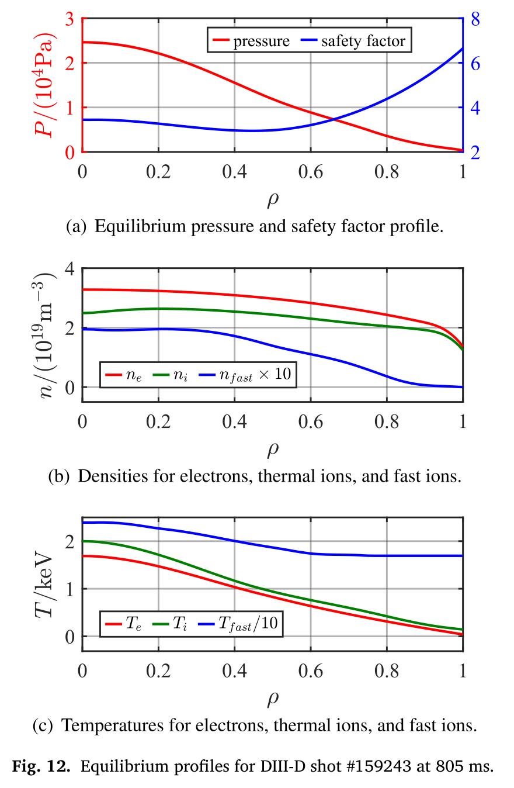
热离子及快离子都是Maxwellian氘，电子和离子剖面见Fig.12。计算域0.1<ρ<0.9，网格256×64×16，Δt=0.025tA，每格64个标记、16点回旋平均，不加数值耗散；逐个扫描环向模数n，每次用1/n环向区域。
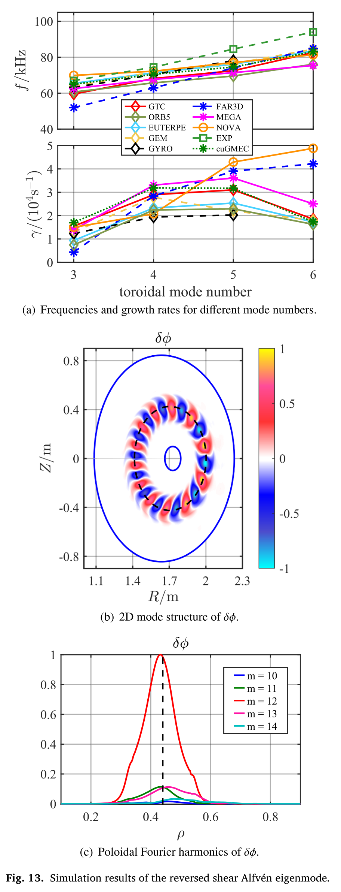
结果：各代码频率总体一致，增长率由于模型不同有可见离散；多数代码最强的模式为n=4、5，cuGMEC增长率最接近GTC和MEGA。n=4模的δφ峰值在qmin附近，主导极向谐波为m=12。Fig.13的实验比较是790 ms的ECE频率，而输入平衡标题为805 ms，应保留这15 ms的时刻区别。
解读：这比圆截面基准更接近现实装置，检验了形状、剖面和有限轨道响应的共同影响。但“跨代码频率一致”不等于“全部增长率与实验一致”，更不意味着已预测实验中的EP重新分布。论文也没有把模型差异导致的增长率分散转化为统一的不确定度区间。
案例六：CBC中的ITG与KBM，以及明确缺席的TEM
论文结果（第12–13页，§4.4，Figs.14–15）：采用Cyclone Base Case剖面，q=2.52(r/a)²−0.16r/a+0.86；电子与离子的密度、温度剖面形式相同。
原文式(25)–(26)：Tref=2.2 keV，ΔN=ΔT=0.3，κN=2.2，κT=6.9。正文这两式附近未明确给出r₀数值，复现时需查输入文件，不能自行补成精确值。
R₀=0.835 m，a=0.36R₀，B₀=2 T，背景为氢离子；固定Tref，通过Nref扫描βₑ。n=10，模拟1/10环向区域；0.05<ρ<0.9，网格256×64×16，Δt=0.02tA，每格64个离子标记、16点回旋平均；涡量方程加入D=10⁻⁷的同类耗散。
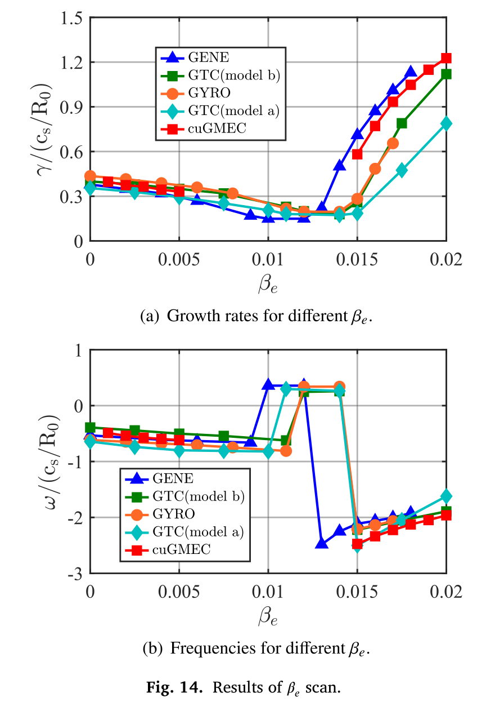
Fig.14：低βₑ区ITG增长率随βₑ增加而下降，高βₑ区进入增长较强的KBM分支；两者频率为负，在文中约定下沿离子抗磁方向旋转。其他含动理学电子代码在中间β区间显示TEM频率分支。作者明确声明cuGMEC尚无电子动理学，不能模拟这一TEM分支。因而应写成“验证ITG和KBM，并显露电子流体闭合的边界”，而不是“完整再现ITG→TEM→KBM转变”。
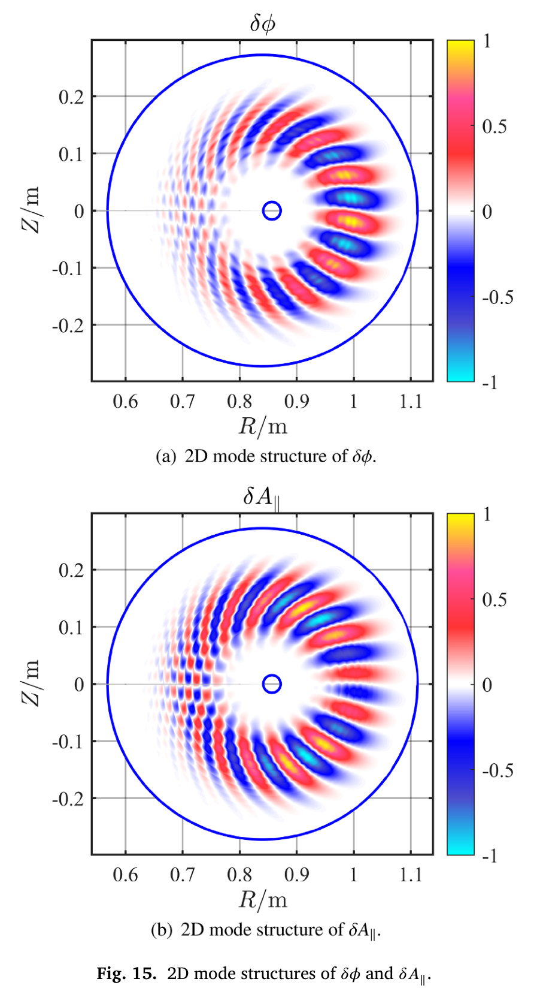
βₑ=1.5%的结构显示δφ偏向不利曲率区，而δA∥具有不同的奇偶性与幅值分布。它为有限E∥及热离子动力学的实现提供补充证据。本文前言讨论了ITG微湍流与AE的跨尺度相互作用，但这里展示的是模式基准，不是同时演化微湍流与AE的非线性输运结果。
6. 性能：先定义分母，再谈加速
§5 的主性能测试使用 A800 SXM4 80GB、双精度、CUDA 12.2、cuDSS 0.4.0、NCCL 2.25.1、Intel MPI 2021.14.2，粒子分布取 n=6、快离子温度400 keV的TAE例。前文 kernel 微基准涉及不同 GPU 与精度，不应混入这一组整机数字。
6.1 网格伸缩不是强伸缩
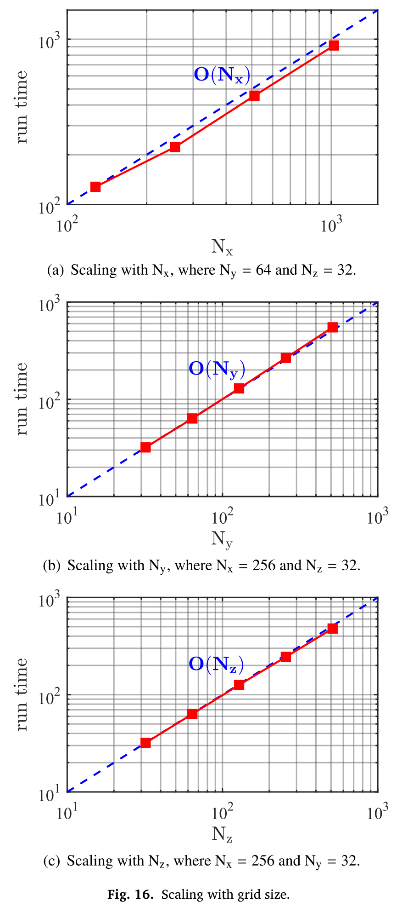
图16固定单卡、逐方向增大网格，平均每格48个快离子、16点回旋平均。曲线约随问题规模线性增长，说明此范围内实现没有明显超线性退化；纵坐标为便于作图做过归一化，不是直接秒数。网格增大也随之增加总粒子数，所以不能把图中 PIC 曲线解释成只改变场网格、粒子数固定的实验。
6.2 原表1：固定问题，增加 GPU
| GPU数 | MHD耗时 | MHD效率 | MHD+PIC耗时 | 混合效率 |
|---|---|---|---|---|
| 1 | 1.08 s | 100% | 5.02 s | 100% |
| 2 | 545 ms | 99.1% | 2.58 s | 97.3% |
| 4 | 275 ms | 98.2% | 1.33 s | 94.4% |
| 8 | 143 ms | 94.4% | 710 ms | 88.4% |
| 16 | 76.3 ms | 88.5% | 384 ms | 81.7% |
| 32 | 41.3 ms | 81.7% | 218 ms | 72.0% |
MHD-only 网格为256×256×256，混合模型为256×256×64、每格48快离子。它们是两个独立问题，不能相减得到同一网格的 PIC 代价。两者单卡都占用接近90%显存。混合模型在32卡上实际加速约5.02/0.218=23.0倍，其效率是23.0/32≈72%。
6.3 原表2、3：粒子数与回旋平均点数成本
P/G为平均每网格粒子数；GYRO=0指在导引中心直接取场，不是没有粒子。以下均为PIC每步耗时。
| P/G \ GYRO | 0 | 4 | 8 | 16 |
|---|---|---|---|---|
| 32 | 15.2 ms | 56.2 ms | 102 ms | 190 ms |
| 64 | 28.9 ms | 106 ms | 194 ms | 365 ms |
| 128 | 56.1 ms | 204 ms | 375 ms | 711 ms |
| 256 | 110 ms | 397 ms | 732 ms | 1.39 s |
| P/G \ GYRO | 0 | 4 | 8 | 16 |
|---|---|---|---|---|
| 32 | 69.8 ms | 269 ms | 473 ms | 860 ms |
| 64 | 131 ms | 484 ms | 879 ms | 1.61 s |
| 128 | 244 ms | 897 ms | 1.62 s | 3.03 s |
| 256 | 473 ms | 1.73 s | 3.16 s | 5.88 s |
两张表网格和GPU数均不同，不能把表3/表2的耗时比直接称为并行效率。原文给出P/G=64、GYRO=4时，单模例每步132.3 ms，10,000步约1323 s；多模例每步548.2 ms，10,000步约5482 s。这里是按步耗时乘步数估算，未单独列出平衡生成、初始化、I/O或排队时间。
6.4 “约20倍”实际是什么？
同一256×64×512、P/G=64、GYRO=4问题，8 GPU每步MHD/PIC为64.2/484 ms；32颗Xeon Gold 6348 CPU sockets（896核）为279 ms/2.72 s。原文使用设备数乘耗时的定义：
分别对MHD、PIC得到17.4倍、22.5倍。它表达这组配置下的设备资源时间等效，不是“相同设备数实测墙钟缩短21.9倍”，也不是能耗或采购成本比。
本报告复算：原文实际两组硬件的墙钟比约5.47。资源等效比=4×墙钟比，与21.9自洽。不能由此保证换成1卡对1socket仍维持同样比值，因为扩展效率、显存与通信条件会变。
7. 值得在阅读会明确标出的疑点与能力边界


原文疑似倒置：ρᵢ/a=125
第12页原PDF确实印为“ρᵢ/a=125”，已进行像素核对，并非文本抽取错误。按本例给出的氢离子、Tref=2.2 keV、B₀=2 T、a=0.36×0.835=0.3006 m，并采用ρᵢ=√(mᵢTᵢ)/(eB)的热速度约定，得到ρᵢ≈2.396 mm，a/ρᵢ≈125.45。因此最自洽的理解是作者把a/ρᵢ≈125的分子分母印反了。
严谨写法应保留不确定性：“原文写ρᵢ/a=125，疑为a/ρᵢ≈125；按所列参数核算支持后一种写法。”不能静默改正后当作原文，也不能照抄出离子回旋半径大于等离子体半径125倍的物理设定。复现仍应核对代码实际输入与回旋半径定义。
从模型原理看：哪些边界值得改进？
下面分清原文明确未包含的物理与根据方程结构提出的适用性问题。模型约化是为特定频段减少计算量，不等同于程序错误；增加物理也需要新的闭合、一致性和基准，不能只多加一个项。
| 模型层边界 | 可能影响什么 | 可行改进与必须验证的内容 |
|---|---|---|
| 电子为连续性＋等温流体，非动力学电子（原文明示） | 电子Landau共振、俘获电子动力学缺失；本文直接承认不能模拟中间β的TEM。 | 较轻路线是给passing电子引入Landau-fluid/热流闭合，检查阻尼与相位；若目标是TEM，还须加入俘获电子响应，单加热流不自动恢复bounce/precession共振。passing闭合先用动理学Alfvén波阻尼和相位验证；俘获电子扩展再用CBC扫描比较频率、增长率、临界β和TEM分支，而非只比压力误差。 |
| 场自由度以δφ与δA∥为主，没有独立的磁压缩δB∥闭合（方程结构） | 需要独立磁压缩响应的有限β问题，或更一般压力各向异性效应，未由现有验证覆盖。 | 不能简单往轨道塞入δB∥：应连同垂直压力平衡/场方程、粒子响应、平衡漂移与能量交换一致推导。注意∇×(δA∥b₀)在曲线磁场中可有平行投影，所以不应写成“代码所有δB∥严格为零”。 |
| 低频回旋动理学与k∥≪k⊥结构（原文坐标/降维依据） | 回旋频率附近、回旋共振、强三维多尺度而不满足该排序的模式不应直接外推。 | 明确目标模式的频率、尺度和轨道宽度；先评估排序误差。高频问题可能需不同模型，增加GPU数不能修复模型截断误差。 |
| 压力反馈采用曲率项中的(δP∥+δP⊥)/2，非一般全压力张量动力学 | 这是一种面向剪切Alfvén等低频问题的闭合；不能直接宣称覆盖一般各向异性MHD及所有压缩/动量耦合。 | 若研究强各向异性EP分布，先从一致动理学–MHD约化推导保留项，再对比当前压力闭合的失效区间。不能凭有平行/垂直矩就认定完整张量耦合已经实现。 |
| 本文所列方程未展示碰撞、持续注入/α源及慢化源汇 | 初值瞬态和长期燃烧稳态是不同问题；固定背景分布不足以描述持续源、慢化与损失竞争。 | 加入可控碰撞/慢化/源汇时核对粒子数、能量收支和稳态。δf方法本身可以非线性，不能把这一边界误解为“δf只能线性”。 |
| 平衡输入与动力学分布的一致性依赖算例 | TAE例不含EP平衡压力，RSAE例含EP平衡压力，不能笼统宣称全篇忽略EP反作用。 | 做有限β/高EP压强扫描时检查平衡、分布及场闭合是否一致；区分给定平衡上的微扰演化和输运时间尺度上的平衡重构。 |
模型改进优先建议：若要一个边界清楚的小课题，可围绕“电子闭合怎样改变AE/KBM阻尼与分支”建立精确基准；若想针对热离子动力学压缩，则做带记忆的热离子压力闭合，保留EP PIC及场结构。两者都先选单一目标与可验证物理量，避免同时上3D、有限β、神经网络和源汇。
俘获电子–流体混合路线已有近邻：CPC258 (2021)107626研究了俘获电子bounce-average kinetic与passing电子fluid组合。因此研究贡献应是对当前模型的严格耦合、可检验误差及目标物理收益，不能以“首次hybrid电子”定位。本报告没有全文重评该近邻论文，也未实施上述扩展。
其他不能从本文外推的结论
| 边界 | 原文证据与阅读判断 |
|---|---|
| 电子闭合 | 第13页明确缺少电子动理学、无法模拟TEM；第15页把电子动理学列为未来工作。有限E∥不改变这一限制。 |
| 磁轴 | 所有展示算例径向计算域均避开磁轴；第15页把磁轴处理列为后续工作。核心区全局模式与轴附近输运需另行验证。 |
| 三维仿星器 | 第15页说代码“can be adapted”接受3D平衡。正文没有仿星器算例或非轴对称模族验证。 |
| 守恒与非线性可信度 | 作者实现了所列全部非线性项，但论文未给出系统的离散总能量/动量守恒证明或长时间误差预算。非线性TAE和ITG基准还使用了显式数值耗散。 |
| 收敛性 | Fig.14被作者称为收敛结果，但正文没有系统给出各物理算例的网格、时间步、标记数和回旋平均点数联合收敛与统计置信带。 |
| 实际EP输运 | 论文主要展示模频、增长率、模结构及非线性幅值；未展示对真实α粒子慢化分布、长期损失比例或实验输运的定量验证。 |
| 可复现性 | 数据声明为按请求提供；某些系数归一化、边界条件细节、阻尼提取和输入开关需结合对应代码版本与输入文件确认。 |
这里“未展示”与“实现不了”有区别。缺少展示不能证明程序没有某项能力，但不应在阅读报告中替作者补上未经验证的结果。
8. 对DESC与仿星器EP研究的意义：一条值得推进、仍待验证的路线
论文事实：输入链已使用DESC，几何表示采用Boozer与场对齐坐标，离子动理学和全场非线性都已进入GPU实现。作者在第15页提出未来适配三维平衡和仿星器。这些是现实的接口与计算基础；“已支持仿星器非线性EP输运”则超过了本文证据。
研究推论一：三维化首先是几何与谱耦合问题
在轴对称托卡马克，固定n的线性问题可以独立研究，1/n环向扇区因而能大幅节省网格。在具有NFP个场周期的三维平衡中，平衡几何的环向傅里叶分量本身就可把n与n±kNFP耦合成模族。此时必须重新核对允许的周期/准周期边界和模族表示，不能把托卡马克的“单n＋1/n扇区”方案原样套用。此处是基于三维对称性的研究推论，并非论文已完成的功能。
建议的几何验证包括：DESC→Boozer映射与磁通归一化一致性；三维Jacobian、度规和导数的精度；跨场周期插值；粒子—网格坐标转换；以及式(15)–(17)固定φB回旋平均离散在更一般三维几何下的误差。还应检查从k∥≪k⊥到二维Poisson离散的近似，在目标模式和几何上是否仍满足预期精度。
研究推论二：先验证轨道与线性谱，再讨论EP优化
一个可执行的验证顺序是：先用同一DESC平衡检查无扰动轨道的能量和磁矩误差、通行/俘获粒子轨道以及δf背景是否产生非物理源；再检查无EP时的Alfvén谱与三维模族耦合；随后加入指定EP分布，对频率、增长率和模结构做跨代码比较；最后研究多模饱和、EP径向重分布及损失。每一步都应同时做时间步、网格、标记数和回旋平均点数收敛。
对真实装置的EP研究，还需明确分布是否是Maxwellian、慢化分布或各向异性注入分布，平衡是否计入EP压力，边界损失如何处理，以及目标时间尺度是否需要碰撞、源汇或电子动力学。本文TAE与RSAE采用不同的EP平衡压力约定，已说明“同样的快离子温度/密度”不足以唯一指定比较问题。
研究推论三：计算加速可以支持数据闭环，但不是自动得到可微优化
高效的参数扫描有望把DESC平衡族与AE/EP响应连接起来：为每个平衡记录模频、增长率、主要模族、阻尼与驱动分解，再在经过验证的参数域训练代理模型。比起只优化单一线性增长率，更稳妥的是同时跟踪能量守恒、统计误差、模式转换和EP约束指标。作者提出用大规模高质量数据训练代理模型，但论文没有展示训练结果。
DESC使用自动微分，并不意味着DESC→MATLAB→CUDA PIC这条链已经端到端可微。若要做梯度型EP约束优化，需要另行建立敏感性方法或经过验证的代理模型，并控制离散误差、PIC噪声和模态切换带来的不光滑性。上述内容属于后续研究设计，不是本文结论。
阅读会可用一句话收束：cuGMEC的物理贡献是把热离子动理学、FLR、有限平行电场和全场非线性整合进高效的GPU混合初值框架，并用多层托卡马克基准建立可信度；对DESC仿星器研究，它提供了值得继续开发的基础，而三维几何、模族、电子响应和长期输运仍要各自通过验证。
9. 当前代码：论文快照与后续演进分开看
2026-10-19核查作者公开仓库，固定到提交 a7cbfd5103e20e159b3f7d5402db1a103afb5458（提交日期2026-09-10），README标示版本1.27.2609。程序为GPLv3；论文另给CPC/Mendeley版本1存档。代码许可证不等于论文插图许可证。
- README明确说论文中的性能已非当前最优，给出后续单GPU测试。新测试使用256×64×16、Δt=0.025 tA，MHD双精度、PIC含单双精度比较，并说明粒子沉积仍双精度。本报告未将这些新数值混入原表或20倍结论。
- 当前树已有
output3D_0170.ipynb、generateInput3D.m等3D前处理文件及NCSX展示图；README仍把非轴对称设备扩展列为未来方向。文件存在是进展线索，不等于3D动力学已充分验证。 - 当前环境文档指定cuDSS 0.8.0（示例CUDA 12.6），与论文性能测试cuDSS 0.4.0不同。应按所选代码版本配套依赖，不能混搭。
- README的标准流程仍从tokamak平衡计算/导出，经MATLAB生成输入，配置参数与Makefile，编译、运行及后处理。环境准备与输入转换本身是复现工作的一部分。
- 本次静态阅读论文、README、目录树及主循环/PIC沉积实现；没有执行作者程序、没有确认编译通过、没有复现实测性能。当前提交不能自动代表论文存档的精确源码版本。
若要复现，推荐依次核查
- 固定论文存档/源码提交、CUDA/cuDSS/NCCL/MPI版本及GPU型号；记录精度、编译参数、MPI ranks和设备绑定。
- 先做MHD撕裂模：用网格与步长收敛确认γ∝η3/5，再添加粒子，避免同时调试所有模块。
- 复现TAE线性基准，明确无FLR/有FLR开关分别影响背景极化算子和粒子取场/沉积；固定随机种子并统计粒子噪声。
- 再做辐射阻尼与非线性耦合，分别检查径向分辨率、gyro点数、P/G、时间步长、滤波/耗散敏感性；记录总能量和物种间交换作为独立诊断。
- 最后做性能剖析：预热后报告多次重复的median与分位数，分开初始化、MHD、Poisson、gather、push、deposit、all-reduce、sort、I/O；保持相同物理误差才谈硬件比。
- 转入stellarator前，单独验证3D度规、坐标映射、NFP与环向耦合、平衡力残差、粒子轨道与守恒量。不能直接沿用轴对称单n解耦假设。
上述是本报告建议的复现路线，不是已完成实验或作者承诺。固定版本来源：README。
10. 来源、版本与本次核验范围
- 主文：S. Y. Liu, P. Y. Jiang, G. Y. Fu, cuGMEC: A high-performance code for gyrokinetic-MHD hybrid simulation on GPUs with CUDA C++, CPC 327 (2026) 110249. DOI。阅读版本为用户上传的16页出版PDF。
- 程序存档：CPC Library / Mendeley Data v1。此处沿用论文提供链接，未将其与当前GitHub代码做逐文件等价检查。
- 当前程序说明：固定源码提交，核查README、文件目录及主循环/PIC耦合实现。
- 前代GMEC：Jiang等，PoP31,073904 (2024)；Liu等，PoP31,073905 (2024)。本文模型升级以cuGMEC原文自身叙述为准，本次未重新全文审计这两篇前作。
原文16幅编号图均保留并逐图解释；三个性能表按原表完整重排；核心公式以离线KaTeX预渲染，图/公式可直接本地打开。原图来源统一为上述论文，对应页码见图注与 图像清单。数字若为本报告计算已明确标注；未从图上虚构精确采样值。
原文插图与内容权利归作者/出版方；本报告为独立阅读分析，不替代原文，不包含整篇PDF。网页数学排版使用KaTeX（MIT许可证），见assets/katex/LICENSE。